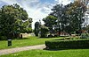

parkland

Definition: A park is an area of natural, semi-natural or planted space set aside for human enjoyment and recreation or for the protection of wildlife or natural habitats. Urban parks are green spaces set aside for recreation inside towns and cities. National parks and country parks are green spaces used for recreation in the countryside. State parks and provincial parks are administered by sub-national government states and agencies. Parks may consist of grassy areas, rocks, soil and trees, but may also contain buildings and other artifacts such as monuments, fountains or playground structures. Many parks have fields for playing sports such as baseball and football, and paved areas for games such as basketball. Many parks have trails for walking, biking and other activities. Some parks are built adjacent to bodies of water or watercourses and may comprise a beach or boat dock area. Urban parks often have benches for sitting and may contain picnic tables and barbecue grills.
Source: Wikipedia
Wikipedia Page (Something wrong with this association? Let us know.)
Wikidata Page (Something wrong with this association? Let us know.)
Occurs in: